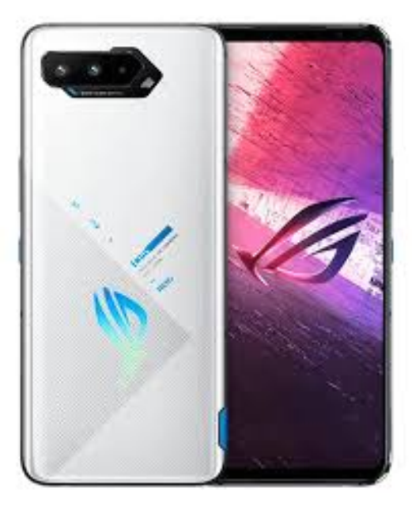

Sobre o projeto
Este site foi criado como trabalho da disciplina de HTML e CSS e apresenta o ASUS ROG Phone 9, smartphone da linha Republic of Gamers, voltada para jogos.
O conteúdo está dividido em páginas:
- Início — apresentação do aparelho
- Especificações — ficha técnica completa
- Recursos — o que faz o aparelho ser gamer
- Galeria — vídeos do produto

Em resumo
O ROG Phone 9 reúne o chip Snapdragon 8 Elite, tela AMOLED de até 185 Hz e bateria de 5.800 mAh com carregamento de 65W, além da traseira AniMe Vision.
Técnicas de CSS usadas
- CSS inline, interno e externo
- Seletores, classes e id
- color, background e gradientes
- border, margin e padding
- width, height e max-width
- display, flexbox e grid
- position: menu suspenso e botão de topo
- float e overflow
- opacity e transições
- text-shadow e box-shadow
- Media queries (layout responsivo)
- Especificidade e regra !important
Informações baseadas nas especificações divulgadas pela ASUS.
Voltar à página principal Ver a galeria